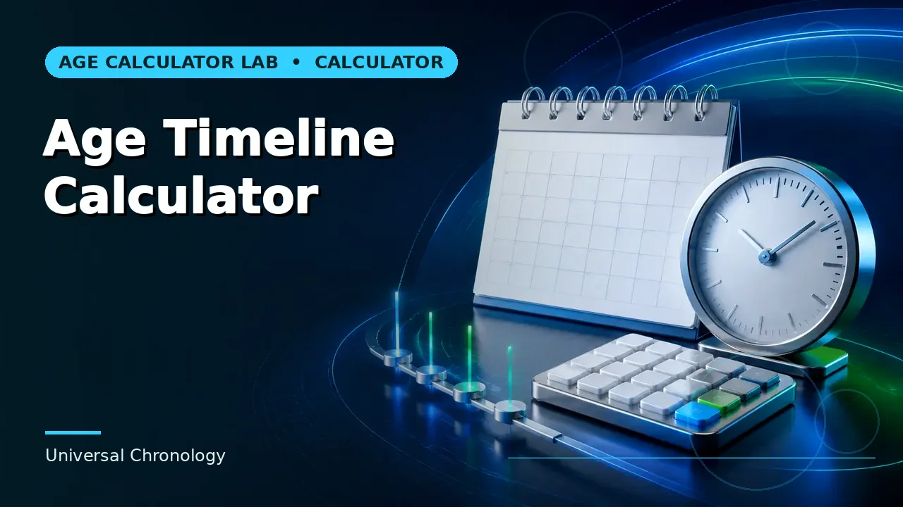
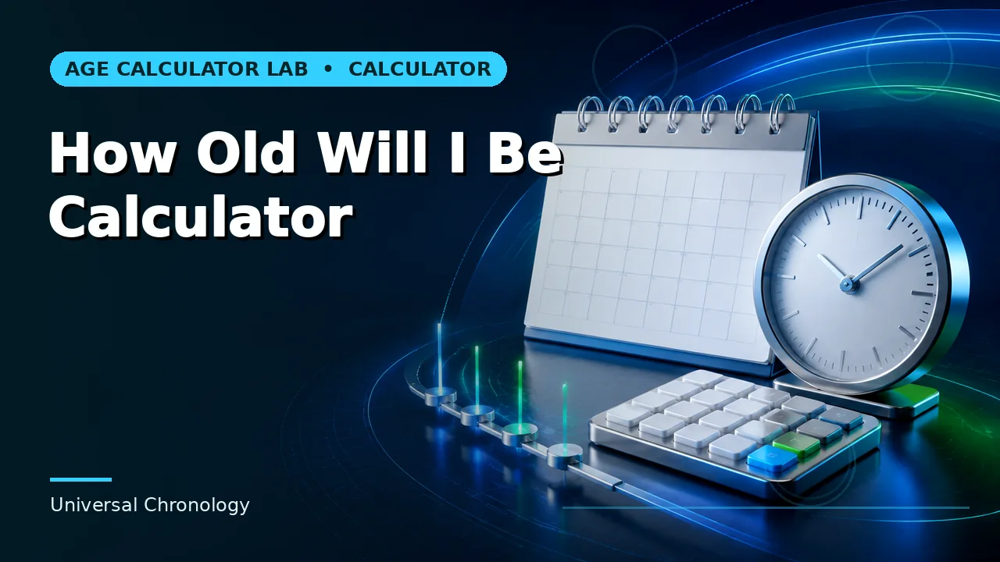

Quick answer
Compute age at each milestone from the date of birth. Chaining calculations accumulates error and makes any single change require redoing the whole sequence.
Independent calculations, not a chain
The instinct with a series of milestones is to work forward — age at the first, then add the gap to reach the second, and so on. That works arithmetically and fails operationally, because every figure after the first depends on the ones before it.
Calculate each milestone directly from the date of birth instead. Each answer stands alone, an error in one does not propagate, and changing a single date does not require recomputing everything after it.
Use this guide with the right tool: Open the Age Timeline Calculator for age on a past, current or future milestone date with surrounding birthday context. If the question shifts, compare it with the Age at Event Calculator or the How Old Will I Be Calculator.
Milestones are different kinds of thing
A birthday is an anniversary of the birth date. A school entry point is a policy boundary at a fixed calendar date. A retirement target is a chosen age. An event is an arbitrary date. These need different calculations even though they all produce an age.
Keeping them in one list is useful; treating them as one calculation is not. Label each row with what kind of milestone it is, because that determines which convention applies when the answer falls near a boundary.
Where thresholds sit near the date
The value of laying milestones out together is that near-misses become visible. A date three weeks before a birthday, or two days the wrong side of a school cutoff, is obvious in a table and invisible in a single calculation.
Those are the rows to verify against the actual governing rule rather than against the calculator. The calculator says what the age is; only the rule says what the age means, and rules with thresholds are the ones most likely to have been updated since you last looked.
Keeping a timeline current
A milestone timeline is a snapshot. Dates move, rules change, and any row expressed relative to today goes stale immediately. Store the date of birth and the milestone dates, and regenerate the ages rather than storing them.
Where a timeline is shared — with a family, a school, an employer — regenerate before sending rather than forwarding an old one. The shareable result link reopens a calculation with its inputs intact, which is more robust than a pasted figure.
Worked example
Substitute your own dates and follow the instructions that actually govern your situation. Where a result sits close to a cutoff, verify the underlying date and rule independently before relying on it.
Common mistakes to avoid
- Chaining calculations from one milestone to the next. Errors propagate and a single change forces a full recompute. Calculate each from the birth date.
- Treating every milestone as an anniversary. Policy boundaries, chosen target ages and arbitrary event dates each behave differently near a threshold.
- Storing calculated ages in the timeline. Store the dates and regenerate. Stored ages go stale without any signal.
Use the right calculator
Each of these runs in the browser, states its assumptions, and links to the neighbouring calculation when the question turns out to be a different one.



Frequently asked questions
How far ahead is worth planning?
The arithmetic is exact at any distance. The rules attached to the ages are what change, so re-check anything rule-dependent closer to the time.
Should I include past milestones?
Yes if the record is a history. Mark them clearly so nobody reads a past age as a projection.
What about February 29 birth dates?
Anniversary milestones need a stated convention for non-leap years. Fixed-date milestones are unaffected.